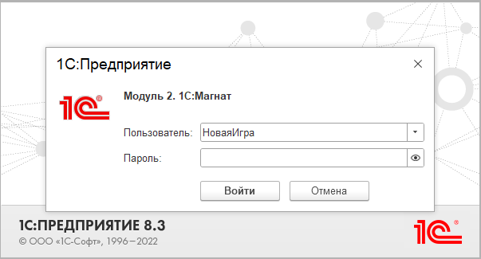
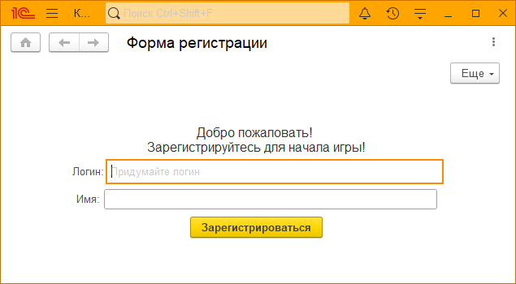
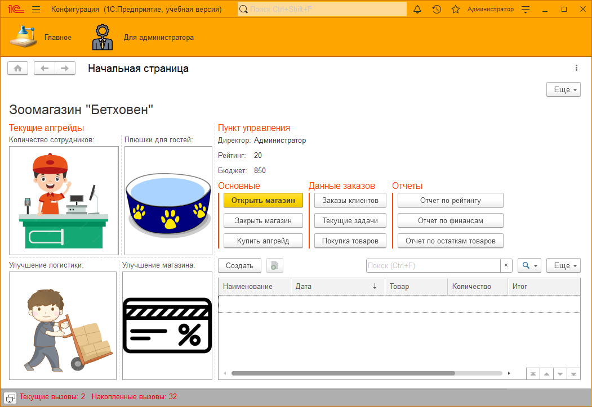
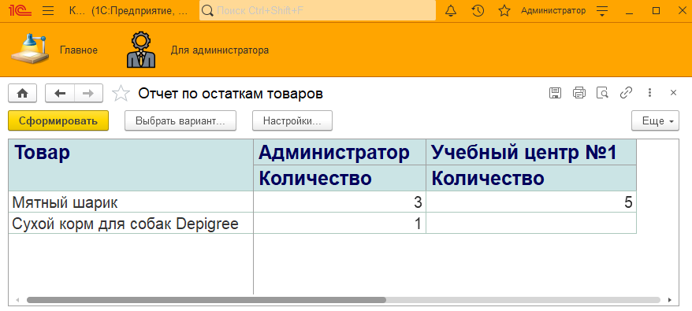
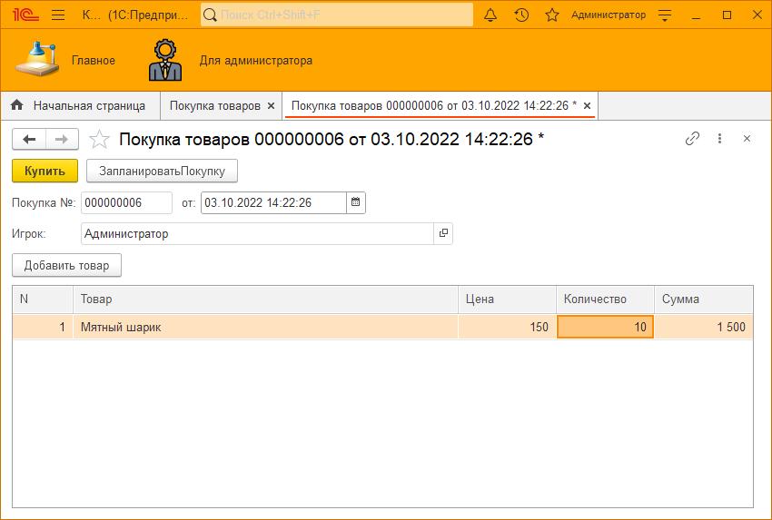
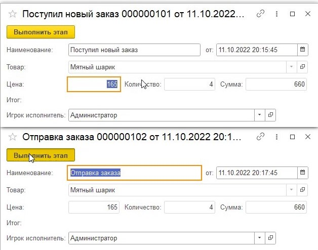
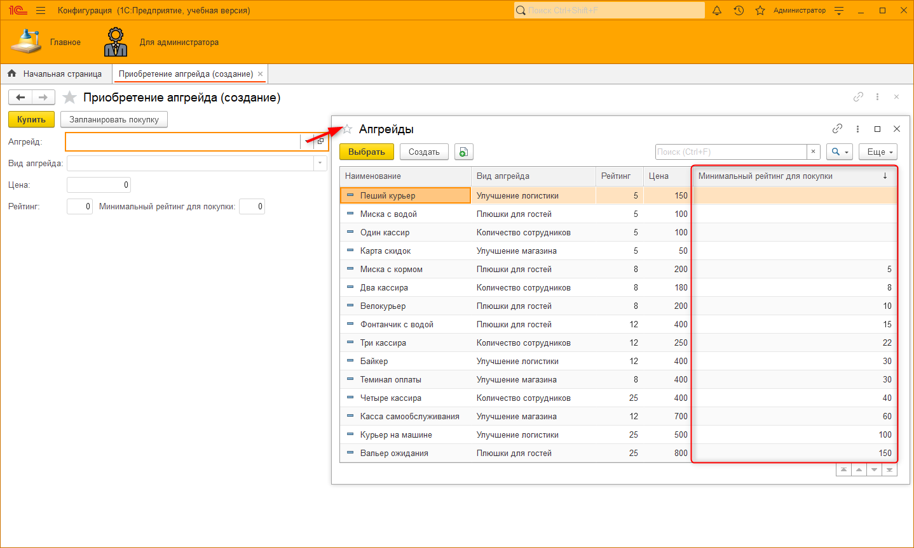
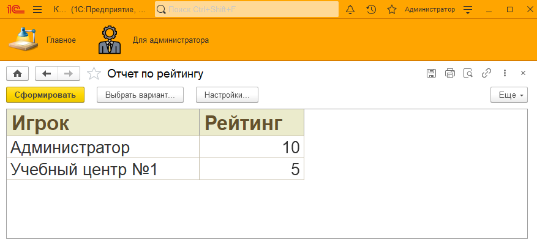

Программа "Разработчик Junior: программирование бизнес-приложений, игр и сайтов. Изучаемые языки: 1С, JavaScript, HTML, CSS, PHP, MySQL, C#" состоит из 4 модулей по 36 ак. часов. Каждый модуль программы является логическим продолжением предыдущего, рекомендуем проходить их последовательно друг за другом:
1 МОДУЛЬ. "МИНИ ИГРЫ 1С" Первый модуль посвящен созданию мини-игр на языке "1С:Предприятие 8". Изучая основы программирования, ученики научились создавать 2D-игры, создали игру-квест с собственным сюжетом и научились создавать карточные игры. На примере создания игральных кубиков освоили начальную логику и синтаксис программирования. |
2 МОДУЛЬ. "1С:МАГНАТ" Во втором модуле ученикам предстоит создать свой первый бизнес-проект. После создания нескольких игр встает необходимость реализации более серьезной игры. Теперь с помощью платформы "1С:Предприятие 8" создадим игру с торгово-учетной системой. Задача игрока в новой разработке – не уйти в ноль и выполнять заказы клиентов. В игровом формате вместе создадим собственное приложение для оптимизации бизнес-процесса. |
В третьем модуле ученики разработают сайт с системой аутентификации пользователя с последующей его авторизацией. Мы ознакомимся с такими языками программирования, как HTML, CSS, JavaScript и другие, узнаем как работает база данных и создадим собственный веб-дизайн. |
В четвертом модуле ученики познакомятся с одним из самых популярных движков для создания видеоигр - Unity. Мы ознакомимся с синтаксисом и интерфейсом, рассмотрим применение физики и анимации для создания собственного бесконечного раннера с подсчетом очков и записью рекордов игроков. |
Обозначения:
Новые термины выделяются следующим образом. |
Важные дополнения к материалу выделяются следующим образом. |
Добро пожаловать во второй модуль программы "Разработчик Junior". В рамках второго модуля мы создадим бизнес-приложение. В отличие от первого модуля, где создавалось несколько небольших игрушек, во втором модуле мы создадим большую, комплексную игру, посвященную торговле.
В результате у каждого получится разработать игру вокруг своего собственного магазина на любую тематику: зоомагазин, магазин бытовой техники или магазин товаров для творчества.
Для начала обучения на этом модуле каждый ученик должен завершить прохождение модуля 1, на котором:
Если все пункты соблюдены, то можно приступать к обучению!
Для начала изучим логику программы, которая должна получиться в результате: задача каждого игрока заключается в том, чтобы получать прибыль от работы своего предприятия. Благодаря полученным средствам игрок сможет улучшать и развивать свой магазин. Игрок должен стремиться занять первые позиции по прибыли и рейтингу в списке всех игроков.
Для реализации такой игры нам потребуется выполнить ряд задач:

Рис. 1. Окно авторизации

Рис. 2. Форма регистрации
От рейтинга зависит то, как часто в магазин будут приходить покупатели: чем выше рейтинг, тем больше покупателей приходит – фирма получает большую прибыль. Также рейтинг влияет на итоговое количество товара.

Рис. 3. Форма начального экрана

Рис. 4. Отчет по остаткам товаров

Рис. 5. Документ "Покупка товаров"

Рис. 6. Формы этапов заказа клиента

Рис. 7. Документ "Приобретение апгрейда"

Рис. 8. Отчет по рейтингу